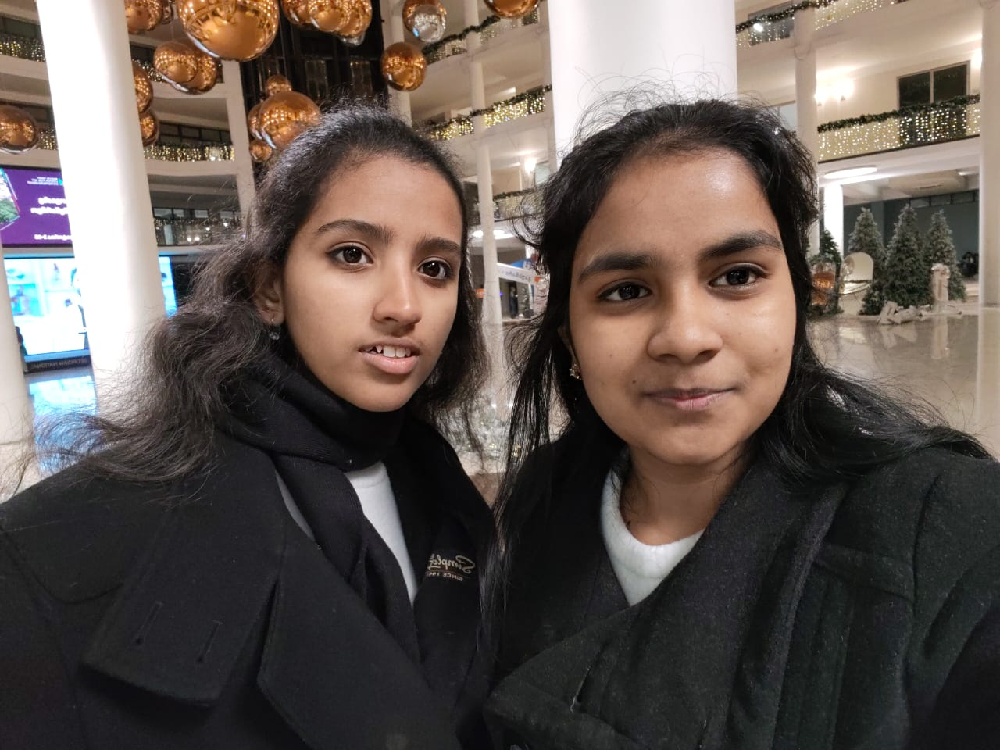
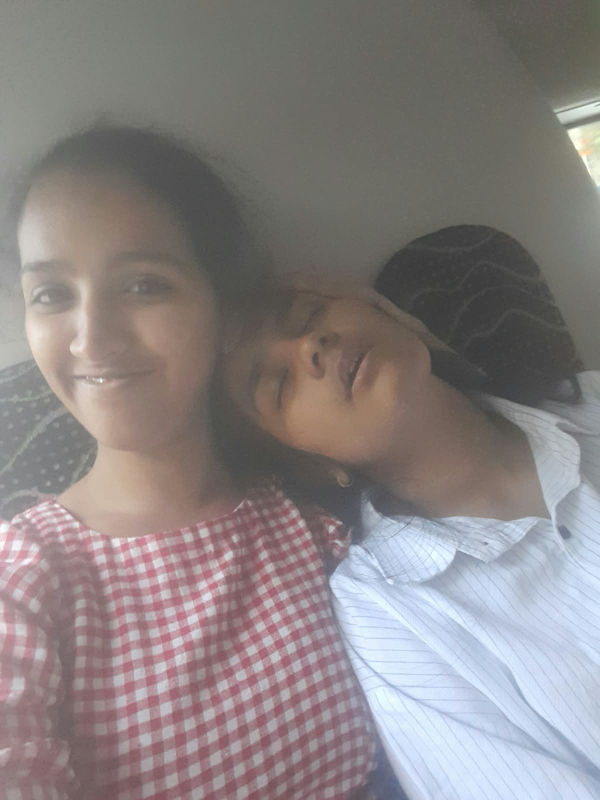

evidence exhibit no. 01 ♡

evidence exhibit no. 02
MORE EVIDENCE FROM THE ARCHIVES
A LITTLE WORD FOR ALKU
no angel today... just Jesus, little Alku, and a lot of sparkles ♡
✦✧✦♡✧✦
Philippians 4:19
“My God will fully supply whatever you need, in accord with his glorious riches in Christ Jesus.”
Soo alkuuu.... Nink enth aavashym ondelum, ask eeso okkayy.. Anti chetan prnjepole, nmde appan rich aanuu.... Kashtapads okke ondelum, you're too much loved by god alku... Idk if you feel it, but genuinely i do feel you're selected one... Sooo yeahhh... Thats for alku today❤️
TODAY'S LETTER
13 days lefttt and I'm excited and tensed af bcz Im brokee😭
13 days lefttt and I'm excited and tensed af bcz Im brokee😭 i wanna do something special for youuu but kunjee naya paisa illa and idk what i can do🥲sooo our topic the evidence room... Ee evidence room enthann thaan orkkum... Its basically the memory evidence of our friendship....or like chances were we could've been split up but didnt... And choices that proved how in sync we are...
Likeee orth nookikkee evide ninna nammal aanuuu... I might keep some checkpoints...
Nml koottayi first time orth nookikkee...njn enth random aayi aanu thannod oro kryms prnje... Like vaayinookunne... Hacking... Thaan enganum athokke ammayod prnjarnel....... Ipo njn narakathil irunnene.... Again.... Nmde oro journeyum... Like neet inte journey nmle kooduthal close aaki... Aiims nursing inte journey nmde og manasiliripp okke veliyil kondvann... Pinne ann Vagamon oo etho mala keran poyille... Then we started talking abroad pokan olla plans.....biotechnology n cyber security eduth evidelum pokan olla plans.... China yile Jilin university.... Aviduthe admission test.... Athinde idakk olla oro things.... Delulus... Nitro, pota... Ndpa... Adhoc.... Rora janu shipping... Antu gc shipping... Alland nmde ppdy 3 am vare chatting... Complication pedi aayiruna oralum complication venonm prnja vere oralum... Avidunn ambulance poyal ivide varunne vare we used to talk...erattupetta pokk for Confession... Merin chechide klynm.. Sleepover.. .... Ath angane kore...
Pinne China maari Georgia aayi... Visa stuff.... Nazereth hostel.... Friday kootyma... Hooo Thursday n8 olla delulu parachil kayinj friday olla oru awkwardness ond ende ponnooo.... Mukhathott nookn pattuvo... Pinne ellaroode unthi anakkara vittu...ath enna unda aayirunn... Nee nannayalo ini njn enth cheyum enn orth dukhich irikuvallayirunoo ee njan... Bhaagyathinu thaan nannayilla... Entho 1 pishach irangi 7 pishach keriya avastha ayairun nml anakkara vitt ksrtc keriyapo.... Aa bus kar vare said ithrem divsm mindnd irunnente kaanan ondenn... Friendship so goated alleeee...
Pinne visa varunnuu ticket edukkunnu wait wait wait athin mumb new phone new tab ellam matchinh matching... Last ifse code vare swap aaki kalanj nml... Pinne angane angane angane naadu vittu... Kochi nn air arabia keri orkunnondo nml chuma irangi nadanne cherupp onnm idandd... Ath kayinj abu dhabhinn Tbilisi kk keriyapo aduth seat ondakan kashtapettee.... Tbs vannapo dhanush ende petti unthi enn prnj pullikk enne noottam indenn prnje okkeee..... Orma ondaloo alleee....
Pinne prarthana apt poyathum, hstlil first vanneyum, nml vanne purake nmde chetanmar also vannathum but we never knew!!! Makes me think ithokke oru sign aanuu bcz ann kandarnel inn dilkin kananillayirunnu... Allelum delulu is the solulu alleeee..... Aah angane hstlil first betru nte roomil irunneyum... Pinne aleenade koode... With aa valya soap okkee... Early mrng eneett ocha ondakand lavashi n fish achar kayichee...fawas mcd...gudauri trip... Aishu okke aayi koott aayee.... Ann one day aaswasathinu onn kettipidich kidanne aanu... Ipo thaan illand kidakmbm entho poleee....
Pinne nadamika entry... First signs of possessiveness... Trc edukkal... Akkune kittiye..... Avlabari palli... Gayathri de karachil....neeyam thanalinu....... Etho oru currypot video.... Borjomi..... Aishu bday...ahana okke scn aayee... 1st sem midterms inu thante chetane kitti... 1st sem finals inu ende chetanem... Akkunte bdaykk stefi effort itte to win akku back... Annu palace kitchen il vech prawns biriyani....
Pinne njngde chatting... Nmde naatil pokk... Room no 10 depressionil aakunee...nml poya timeil ivrk netum illa currentum illa food um illa... Remember??? Annit akku mrng eneet achunte phoneum aayi nadakan pokal net inu vendi... The way their schedule changed to nmde reethikk... Nml distance itt thirich vann avrk heartbreak ondakkiyee...ath kayinj iratti ithayi kootu koodiyee....pinne 2nd sem...aa kitchenil irunn mrng kaapi kudi, biscuit kazhipp, mess ondakkal.... Enthoke aayirunn.... Living together since then..nmde matching dresses... Oro thrift kadayil pokk.... Carrefour pokk... Highlight is theetta kada pokk... Last day aaro chaya kudikan town vare poyapo amma was telling oo chayakk vendi aano ithrem enn... Nmloooo..... Mikeil pottiche....we cried annit poyi food kayicheee... Pinne black fridaykk lokam motham olla pokk.... Christmas shopping... Avr churchinn kotan vanne....nml prynd poya places... Kayicha foods... New yr.... Pinne trc issue... Nml pokkunuuu yudhamm flight cancelll Azerbaijan ticket delay aakun...enthoke bookambm aayirunn.... Athinde idakk irma quiz... Irma is another highlight ende karthaveee... Engne nml valacheduth pullikarine??? BKU il pryne pole kulungatha oru paara ye aan nee... I dont remember exact dialogue but yeah.... Ithinde idakk olla stalkinh.... First akkune okke poyi stalk cheythee....bruh we could take up some job in cbi.... Angane angane irma pass aakiyee.... Then each quiz.... Njn first ellm theerkum thaan irunn padikuna set up.... Vaxtang quiz.... Pine njn naatil poyi... Koode vannitt first time we didn't see eo for 1 montj... Gc de engagement vare escape cheyth njn thanne kaanan vannee... Nmde countdown for comeback.... Idakk stefi bday.... Ende bdayy... Akku bdayy.... Pinne next sem.... Enthokke aalleee... Hippocampus be workinh so hard enik urakam varunnuu.... Inim ondd koree bt maduthedoooo... Baaki pinneee... I have tone of memories w you that want to cherish all my life.... Because ipo thirinj nookmbm, everything we've survived together seems... Amazing....
Thank you eeshoye for alkuu....
Anddd the song goes
There's things I wanna say to you
But I'll just let you live
Like if you hold me without hurting me
You'll be the first who ever did
There's things I wanna talk about
But better not to give
But if you hold me without hurting me
You'll be the first who ever did
Yeah alkuuu... For someone who didn't know how to speak much or to communicate her feelings, you were there, every single time, holding her together when she was about to fall apart. Thank you.... And this is one of the reasons i cherish all my memories with you, because i dont even want to forget the memory or forget the feeling when i had you by my side!
I love you alkuuu!
From your Diamolll
ONE LAST LITTLE THING...
✦♡
for my alku ♡
A little rose, just for you. ♡
🧠 ♡ ♪ ✿ 🍜 ♫
BEFORE YOU LEAVE...
Tell me anything, Alku ♡
A memory, a thought, a complaint, or something your Diyamol should know.